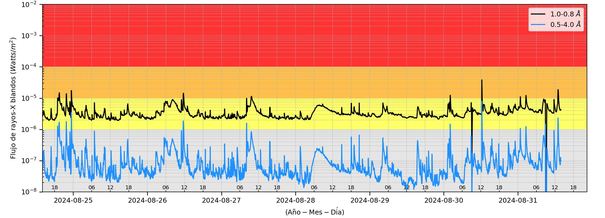

WEPAM<!DOCTYPE html>
<html lang="es">
<head>
<title>Space Weather Peru (pagina de prueba)</title>
<meta charset="utf-8">
<meta name="viewport" content="width=device-width, initial-scale=1">
<style>
h1 {text-align: center;}
p {text-align: center;}
div {text-align: center;}
* {
  box-sizing: border-box;
}

body {
  font-family: Arial, Helvetica, sans-serif;
}

/* Style the header */
.header {
  background-color: #f1f1f1;
  padding: 30px;
  text-align: center;
  font-size: 35px;
}

/* Create three equal columns that floats next to each other */
.column {
  float: left;
  width: 33.33%;
  padding: 10px;
  height: 300px; /* Should be removed. Only for demonstration */
}

/* Clear floats after the columns */
.row:after {
  content: "";
  display: table;
  clear: both;
}

/* Style the footer */
.footer {
  background-color: #f1f1f1;
  padding: 10px;
  text-align: center;
}

/* Responsive layout - makes the three columns stack on top of each other instead of next to each other */
@media (max-width: 600px) {
  .column {
    width: 100%;
  }
}
</style>
</head>
<body>
<h1 title="Atributo de header1">Ejemplo de página web creada durante la reunión SWPeru del 04 de mayo del 2024</h1>

<div class="header">
  <h2>Clima Espacial Perú</h2>
</div>

<div class="row">
  <div class="column" style="background-color:#aaa;">Prevision del ciclo solar de NOAA 
  
  </div>
  <div class="column" style="background-color:#bbb;">Flujo de rayos X de GOES
  
  </div>
  <div class="column" style="background-color:#ccc;">Viento solar ACE-SWEPAM
  
  </div>
</div>

<!-- 
<div class="footer">
  <p>Hosted with GitHub Pages.</p>
</div>
-->
  
</body>
</html>
